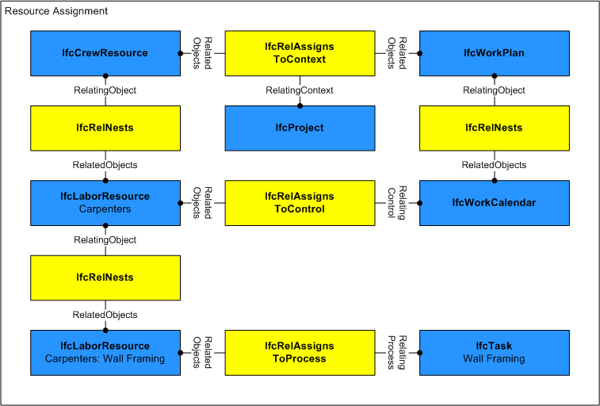
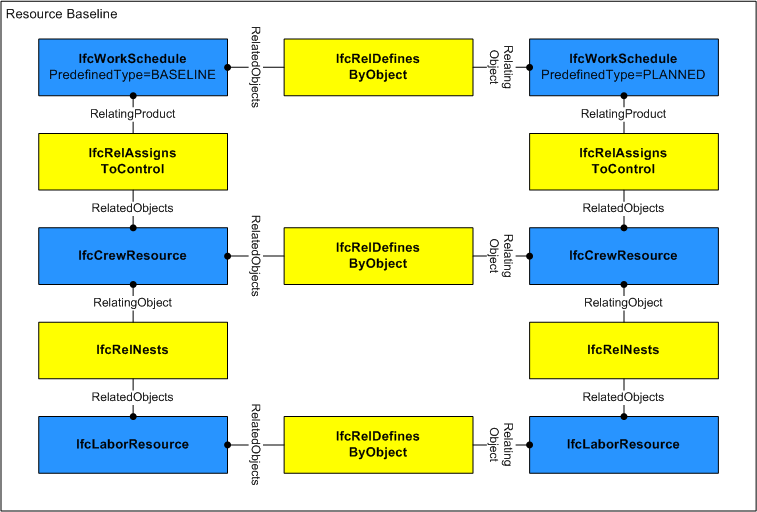
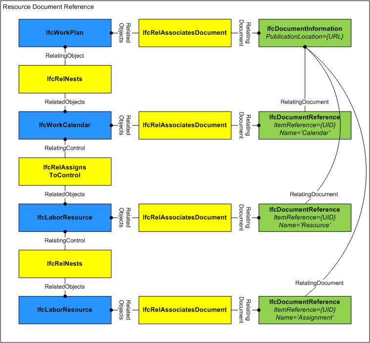
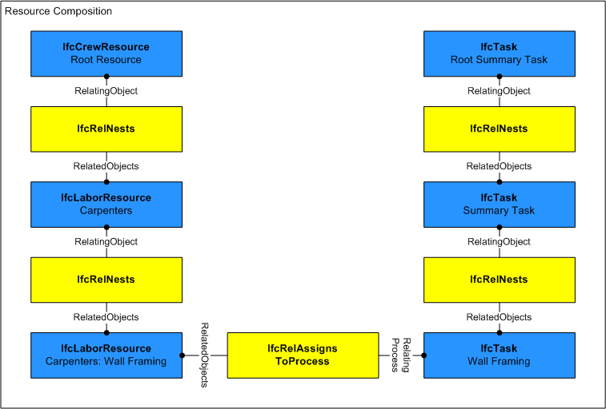
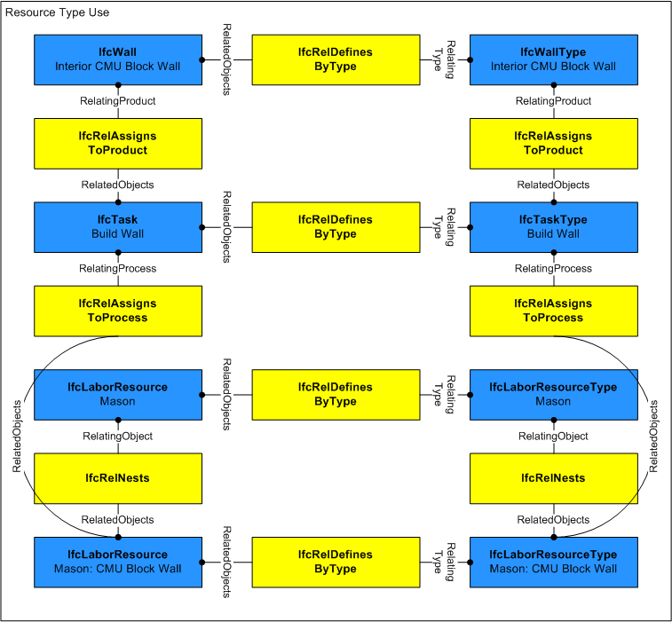
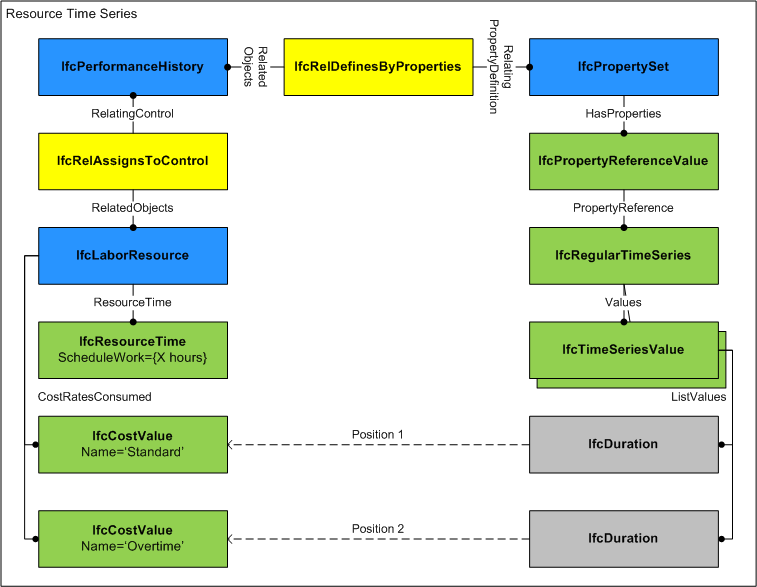

7.3.3.7 IfcConstructionResource
ABSTRACT This definition may not be instantiated
7.3.3.7.1 Semantic definition
IfcConstructionResource is an abstract generalization of the different resources used in construction projects, mainly labour, material, equipment and product resources, plus subcontracted resources and aggregations such as a crew resource.
A resource represents "use of something" and does not necessarily correspond to a single item such as a person or vehicle, but represents a pool of items having limited availability such as general labor or an equipment fleet. A resource can represent either a generic resource pool (not having any task assignment) or a task-specific resource allocation (having an IfcTask assignment).
{ .change-ifc2x4}
{ .use-head}
7.3.3.7.1.1 Declaration use definition
A root-level resource (specifically IfcCrewResource or IfcSubContractResource) is declared within the project by IfcRelDeclares where RelatingContext refers to the single IfcProject and RelatedObjects refers to one or more IfcConstructionResource, and other root-level objects within the project.
{ .use-head}
7.3.3.7.1.2 Assignment use definition
A resource may be assigned to an actor by IfcRelAssignsToActor where RelatingActor refers to an IfcActor and RelatedObjects refers to one or more IfcConstructionResource or other objects. Such relationship indicates the actor responsible for allocating the resource such as partitioning into task-specific allocations, delegating to other actors, and/or scheduling over time. Note that this assignment does not indicate the person or organization performing the work; that is indicated by IfcRelAssignsToResource. The actor responsible for the resource may or may not be the same as any actor(s) performing work.
A resource may be assigned to a control by IfcRelAssignsToControl where RelatingControl refers to an IfcControl and RelatedObjects refers to one or more IfcConstructionResource or other objects. Most commonly an IfcWorkCalendar is assigned indicating availability of the resource, where such calendar is nested within a base calendar or an IfcWorkPlan which in turn is assigned to the IfcProject.
A resource may be assigned to a group by IfcRelAssignsToGroup where RelatingGroup refers to an IfcGroup and RelatedObjects refers to one or more IfcConstructionResource or other objects. Most commonly an IfcAsset is assigned indicating the asset to be tracked, where such asset is nested within an IfcInventory which in turn is assigned to the IfcProject.
A resource may be assigned to a product by IfcRelAssignsToProduct where RelatingProduct refers to an IfcProduct and RelatedObjects refers to one or more IfcConstructionResource or other objects. Most commonly an IfcElement subtype is assigned indicating the product to be constructed, where such product is connected to a spatial structure which in turn is aggregated within the IfcProject.
A resource may be assigned to a process by IfcRelAssignsToProcess where RelatingProcess refers to an IfcProcess and RelatedObjects refers to one or more IfcConstructionResource or other objects. Most commonly an IfcTask is assigned indicating the task to be performed by the resource, where such task is nested within a summary task which in turn is assigned to the IfcProject.
A resource may have assignments of other objects using IfcRelAssignsToResource where RelatingResource refers to the IfcConstructionResource and RelatedObjects refers to one or more objects such as IfcActor or IfcProduct subtypes. This relationship indicates specific objects assigned to fulfill resource usage.
Figure 7.3.3.7.1.2.A illustrates resource assignment.

{ .use-head}
7.3.3.7.1.3 Baseline use definition
A resource may have any number of baselines defined using the relationship IfcRelDefinesByObject where RelatingObject is the "current" resource and RelatedObjects consists of multiple "baseline" resources, each representing a copy of the resource as it existed at an earlier point in time as shown in Figure 7.3.3.7.1.3.A. Each baseline IfcConstructionResource is identified by its nested IfcRelAssignsToControl relationship to an IfcWorkSchedule having PredefinedType=BASELINE, IfcWorkSchedule.CreationDate indicating the date of the baseline, and IfcWorkSchedule.Name indicating the name of the baseline.

7.3.3.7.2 Entity inheritance
7.3.3.7.3 Attributes
| # | Attribute | Type | Description |
|---|---|---|---|
| IfcRoot (4) | |||
| 1 | GlobalId | IfcGloballyUniqueId |
Assignment of a globally unique identifier within the entire software world. |
| 2 | OwnerHistory | OPTIONAL IfcOwnerHistory |
Assignment of the information about the current ownership of that object, including owning actor, application, local identification and information captured about the recent changes of the object. |
| 3 | Name | OPTIONAL IfcLabel |
An optional name for use by the participating software systems or users. For some subtypes of IfcRoot the insertion of the Name attribute may be required. This would be enforced by a where rule. |
| 4 | Description | OPTIONAL IfcText |
An optional description, provided to exchange informative comments. |
| IfcObjectDefinition (7) | |||
| Decomposes | SET [0:1] OF IfcRelAggregates FOR RelatedObjects |
References to the decomposition relationship being an aggregation. It determines that this object definition is a part within an unordered whole/part decomposition relationship. An object definition can only be part of a single decomposition (to allow hierarchical structures only). |
|
| HasAssignments | SET [0:?] OF IfcRelAssigns FOR RelatedObjects |
Reference to the relationship objects, that assign (by an association relationship) other subtypes of IfcObject to this object instance. Examples are the association to products, processes, controls, resources or groups. |
|
| HasAssociations | SET [0:?] OF IfcRelAssociates FOR RelatedObjects |
Reference to the relationship objects, that associates external references or other resource definitions to the object. Examples are the association to library, documentation or classification. |
|
| HasContext | SET [0:1] OF IfcRelDeclares FOR RelatedDefinitions |
References to the context providing context information such as project unit or representation context. It should only be asserted for the uppermost non-spatial object. |
|
| IsDecomposedBy | SET [0:?] OF IfcRelAggregates FOR RelatingObject |
References to the decomposition relationship being an aggregation. It determines that this object definition is the whole within an unordered whole/part decomposition relationship. An object definition can be aggregated by several other objects (occurrences or parts). |
|
| IsNestedBy | SET [0:?] OF IfcRelNests FOR RelatingObject |
References to the decomposition relationship being a nesting. It determines that this object definition is the whole within an ordered whole/part decomposition relationship. An object or object type can be nested by several other objects (occurrences or types). |
|
| Nests | SET [0:1] OF IfcRelNests FOR RelatedObjects |
References to the decomposition relationship being a nesting. It determines that this object definition is a part within an ordered whole/part decomposition relationship. An object occurrence or type can only be part of a single decomposition (to allow hierarchical structures only). |
|
| IfcObject (5) | |||
| 5 | ObjectType | OPTIONAL IfcLabel |
The type denotes a particular type that indicates the object further. The use has to be established at the level of instantiable subtypes. In particular it holds the user defined type, if the enumeration of the attribute PredefinedType is set to USERDEFINED or when the concrete entity instantiated does not have a PredefinedType attribute. The latter is the case in some exceptional leaf classes and when instantiating IfcBuiltElement directly. |
| Declares | SET [0:?] OF IfcRelDefinesByObject FOR RelatingObject |
Link to the relationship object pointing to the reflected object(s) that receives the object definitions. The reflected object has to be part of an object occurrence decomposition. The associated IfcObject, or its subtypes, provides the specific information (as part of a type, or style, definition), that is common to all reflected instances of the declaring IfcObject, or its subtypes. |
|
| IsDeclaredBy | SET [0:1] OF IfcRelDefinesByObject FOR RelatedObjects |
Link to the relationship object pointing to the declaring object that provides the object definitions for this object occurrence. The declaring object has to be part of an object type decomposition. The associated IfcObject, or its subtypes, contains the specific information (as part of a type, or style, definition), that is common to all reflected instances of the declaring IfcObject, or its subtypes. |
|
| IsDefinedBy | SET [0:?] OF IfcRelDefinesByProperties FOR RelatedObjects |
Set of relationships to property set definitions attached to this object. Those statically or dynamically defined properties contain alphanumeric information content that further defines the object. |
|
| IsTypedBy | SET [0:1] OF IfcRelDefinesByType FOR RelatedObjects |
Set of relationships to the object type that provides the type definitions for this object occurrence. The then associated IfcTypeObject, or its subtypes, contains the specific information (or type, or style), that is common to all instances of IfcObject, or its subtypes, referring to the same type. |
|
| IfcResource (3) | |||
| 6 | Identification | OPTIONAL IfcIdentifier |
An identifying designation given to a resource at the occurrence level. |
| 7 | LongDescription | OPTIONAL IfcText |
A detailed description of the resource (e.g. the skillset for a labor resource). |
| ResourceOf | SET [0:?] OF IfcRelAssignsToResource FOR RelatingResource |
Set of relationships to other objects, e.g. products, processes, controls, resources or actors, for which this resource object is a resource. |
|
| Click to show 19 hidden inherited attributes Click to hide 19 inherited attributes | |||
| IfcConstructionResource (3) | |||
| 8 | Usage | OPTIONAL IfcResourceTime |
Indicates the work, usage, and times scheduled and completed. Some attributes on this object may have associated constraints or time series; see documentation of IfcResourceTime for specific usage. If the resource is nested, then certain values may be calculated based on the component resources as indicated at IfcResourceTime. |
| 9 | BaseCosts | OPTIONAL LIST [1:?] OF IfcAppliedValue |
Indicates the unit costs for which accrued amounts should be calculated. Such unit costs may be split into Name designations (for example, 'Standard', 'Overtime'), and may contain a hierarchy of cost values that apply at different dates (using IfcCostValue.ApplicableDate and IfcCostValue.FixedUntilDate). |
| 10 | BaseQuantity | OPTIONAL IfcPhysicalQuantity |
Identifies the base quantity consumed of the resource relative to assignments. For crew, labour, subcontract, and equipment resources, this refers to IfcQuantityTime. For material resources, this refers to any valid dimensional quantity, such as IfcQuantityVolume, IfcQuantityArea, IfcQuantityLength, or IfcQuantityWeight. For product resources, this refers to IfcQuantityCount. |
7.3.3.7.4 Property sets
-
Pset_ConstructionResource
- ScheduleWorkProgression
- ActualWorkTime
- RemainingWorkProgression
- ScheduleCost
- ActualCost
- RemainingCost
- ScheduleCompletion
- ActualCompletion
7.3.3.7.5 Concept usage
| Concept | Usage | Description | |
|---|---|---|---|
| IfcRoot (2) | |||
| Revision Control | General |
Ownership, history, and merge state is captured using IfcOwnerHistory. |
|
| Software Identity | General |
IfcRoot assigns the globally unique ID. In addition, it may also provide a name and description for the concept. |
|
| IfcObjectDefinition (9) | |||
| Classification Association | General |
Any object occurrence or object type can have a reference to a specific classification reference, i.e. to a particular facet within a classification system. |
|
| Aggregation | General |
No description available. |
|
| Approval Association | General |
No description available. |
|
| Constraint Association | General |
No description available. |
|
| Document Association | General |
No description available. |
|
| Library Association | General |
No description available. |
|
| Material Association | General |
No description available. |
|
| Material Single | General |
No description available. |
|
| Nesting | General |
No description available. |
|
| IfcObject (5) | |||
| Object Predefined Type | General |
No description available. |
|
| Object Typing | General |
Any object occurrence can be typed by being assigned to a common object type utilizing this concept. A particular rule, restricting the applicable subtypes of IfcTypeObject that can be assigned, is introduced by overriding this concept at the level of subtypes of IfcObject. This concept can be applied to the following resources: |
|
| Object User Identity | General |
An attribute Name and optionally Description can be used for all subypes of IfcObject. For those subtypes, that have an object type definition, such as IfcBeam - IfcBeamType, the common Name and optionally Description is associated with the object type. |
|
| Property Sets with Override | General |
Any object occurrence can hold property sets, either directly at the object occurrence as element specific property sets, or at the object type, as type property sets. In this case, the properties that are provided to the object occurrence are the combinations of element specific and type properties. In case that the same property (within the same property set) is defined both in occurrence and type properties, the property value of the occurrence property overrides the property value of the type property. |
|
| Assignment to Group | General |
No description available. |
|
| IfcResource (1) | |||
| Object Typing | General |
This concept can be applied to the following resources: |
|
| Click to show 17 hidden inherited concepts Click to hide 17 inherited concepts | |||
| IfcConstructionResource (5) | |||
| Constraint Association | General |
Constraints may be applied to a resource to indicate fixed work (such as total person-hours) or fixed usage (such as simultaneous workers). Figure C indicates fixed usage (such as simultaneous workers) such that changes to ScheduleWork should impact the assigned IfcTask.TaskTime.ScheduleDuration and vice-versa. Figure D indicates fixed work (such as total person-hours) such that changes to ScheduleUsage should impact the assigned IfcTask.TaskTime.ScheduleDuration and vice-versa. |
|
| Document Association | General |
Documents may be published for work plans consisting of schedules, calendars, tasks, and resources. The relationship IfcRelAssociatesDocument may be used to preserve mappings to such document where RelatingDocument points to an IfcDocumentReference and RelatedObjects includes the IfcConstructionResource as shown in Figure E. IfcDocumentReference.ItemReference identifies the resource within the scope of the document, such as an integer or guid. The IfcDocumentReference.ReferencedDocument corresponds to the document which is uniquely identified by IfcDocumentInformation.DocumentId and/or IfcDocumentInformation.PublicationLocation. Such document mapping allows items in the document to be updated from the building information model and vice-versa.  |
|
| Object Nesting | General |
Resources may be decomposed into allocation pools using the IfcRelNests relationship as shown in Figure F. For example, an IfcLaborResource for "Electrician" may be decomposed into three task-specific IfcLaborResource objects: "Electrical Rough-in", "First Floor Circuits", and "Second Floor Circuits". Both relating and related sides may represent the same ResourceTime.ScheduleUsage quantity (for example, 6 workers time-shared), or the related side may break out ResourceTime.ScheduleUsage quantities for reserved use (for example, 4 workers and 2 workers). A common scenario is two nesting levels where the first-level resources have no task assignments; while second-level resources have specific task assignments indicating that the resource is subdivided into allocations for specific tasks. While the model allows unlimited nesting of resources, implementer agreements may restrict to two nesting levels with task assignments specifically at the second level.  This concept can be applied to the following resources: |
|
| Object Typing | General |
The resource type may provide shared productivity and cost information, allowing tasks and resources to be selected according to lowest cost and/or shortest duration. Given an IfcProduct of a particular IfcTypeProduct type, an IfcTypeProcess may be selected from those assigned to the product type using IfcRelAssignsToProduct, and an IfcTypeResource may be selected from those assigned to the process type using IfcRelAssignsToProcess. Then IfcTask and IfcConstructionResource occurrences may be instantiated from the type definitions, applying productivitity and rate information to assigned quantities to calculate ResourceTime.ScheduleWork. Task durations can then be calculated by dividing ResourceTime.ScheduleWork by ResourceTime.ScheduleUsage.  This concept can be applied to the following resources: |
|
| Property Sets for Objects | General |
For time series properties as shown in Figure H, each IfcTimeSeriesValue indicates a LIST of values, where the sequence of the value corresponds to the IfcCostValue at IfcConstructionResource.CostRatesConsumed. For example, if CostRatesConsumed has two IfcCostValue items in the LIST, "Standard" and "Overtime", then IfcTimeSeriesValue(IfcDuration('T8H0M0S'),IfcDuration('T2H0M0S')) would indicate 8 hours at Standard rate and 2 hours at Overtime rate. If the list of values at IfcTimeSeriesValue.ListValues is less than the size of CostRatesConsumed, then subsequent values are considered to be zero.  This concept can be applied to the following resources: |
|
7.3.3.7.6 Formal representation
ENTITY IfcConstructionResource
ABSTRACT SUPERTYPE OF (ONEOF
(IfcConstructionEquipmentResource
,IfcConstructionMaterialResource
,IfcConstructionProductResource
,IfcCrewResource
,IfcLaborResource
,IfcSubContractResource))
SUBTYPE OF (IfcResource);
Usage : OPTIONAL IfcResourceTime;
BaseCosts : OPTIONAL LIST [1:?] OF IfcAppliedValue;
BaseQuantity : OPTIONAL IfcPhysicalQuantity;
END_ENTITY;